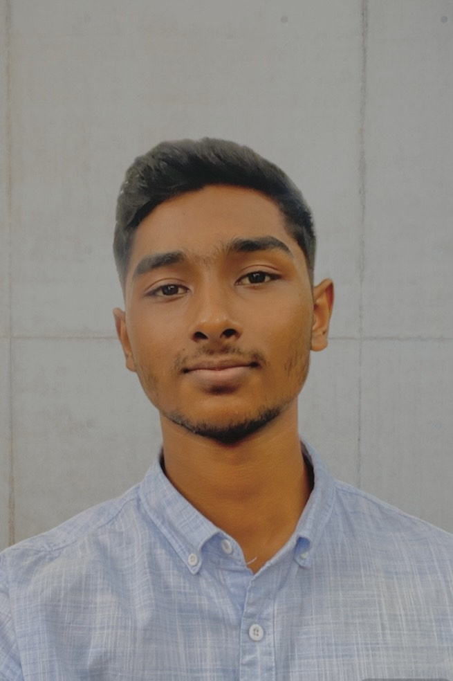

Mohammed Rismy

Summary
Enthusiastic student pursuing a degree in Information Technology Specializing in Software Engineering and eager to apply academic knowledge and develop practical skills. Quick to learn, adaptable, and ready to contribute in a professional setting while gaining hands-on experience in Web Development and App Development.
Education
- Completed G.C.E Advanced Level - St. Anthonys' College, Kandy [2022-2024]
- Bachelors In Information Technology - SLIIT [2024-Present]
Skills
- Technical Skills
- Microsoft Office (Word, Excel, PowerPoint)
- Social Media Management
- Soft Skills
- Communication (written and verbal)
- Teamwork and Collaboration
- Adaptability and Flexibility
- Other Skills
- Language proficiency
- English - Professional Proficiency
- Tamil - Native/Bilingual Proficiency
- Sinhala - Conversational Proficiency
Other